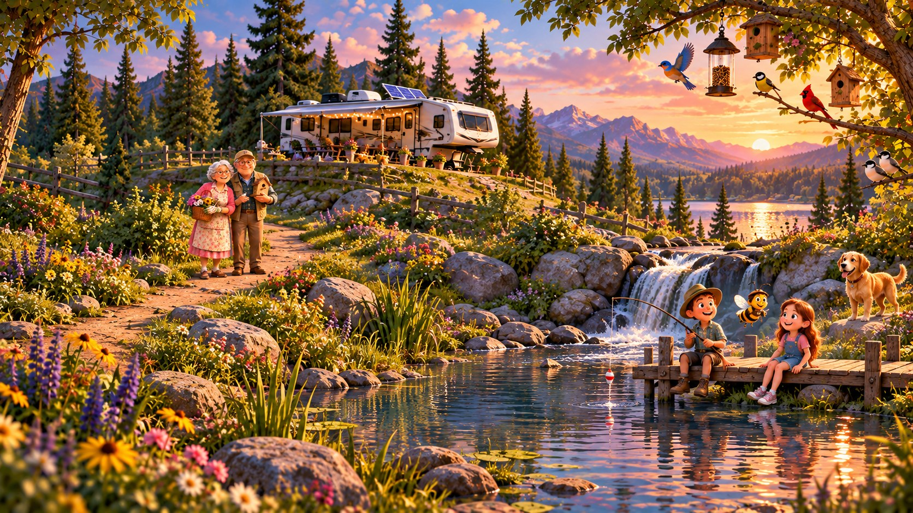

FAMILY TALK
Meet Grandma Cathy and Grandpa Wally.
Hear a simple family sentence, then click the words one at a time.
Phrase 1 of 4
CHALLENGE 1 OF 6

Hear a simple family sentence, then click the words one at a time.